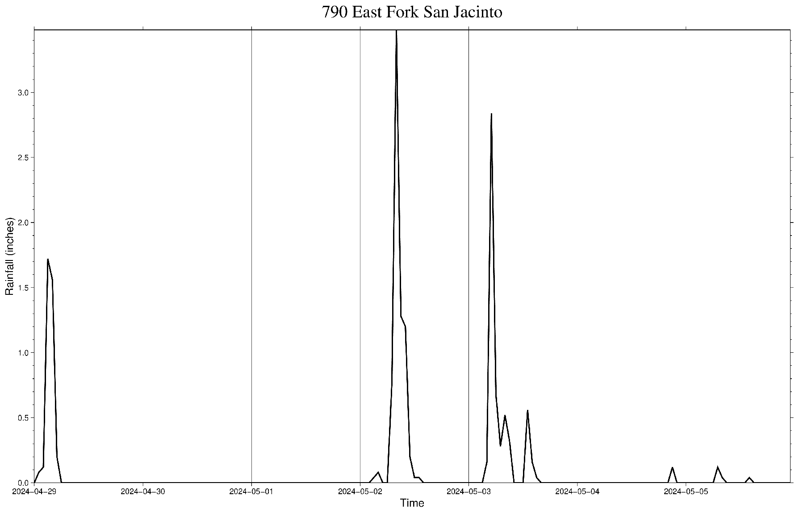
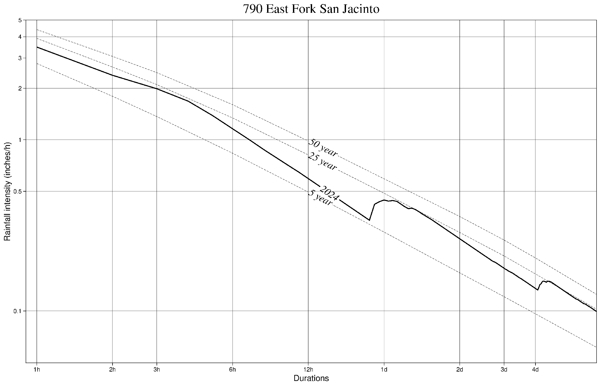

Load packages
using GMT
using CSV
using DataFrames;From late April to early May 2024, heavy rainfall to the Northeast of Houston caused severe flooding. Particularly, the area around the San Jacinto River and Lake Houston experienced the highest cumulative rainfall from April 29th to May 6th. This analysis compares the observed rainfall during this event with the corresponding estimates from Atlas 14 at a representative gauge.
Atlas 14 is a precipitation frequency estimation tool developed by the National Oceanic and Atmospheric Administration (NOAA). It provides estimates of rainfall intensities for different durations and return periods. The estimates are based on historical rainfall data and are used for engineering design and flood risk assessment.
For reproducibility and transparency, we are publishing this analysis as a Quarto notebook, which allows us to combine code and narrative in a single document. To view code, click on the exapndable triangles below. To view the source, see our GitHub.
using GMT
using CSV
using DataFrames;# hourly rainfall observations
prcp_ts_790 = DataFrame(CSV.File("data/790_Rainfall_2024-05-05.csv"))
# Atlas 14 estimates
Atlas14_790 = CSV.File("data/790_Atlas14_PDS.csv", skipto=14) |> DataFrame
Atlas14_790 = Atlas14_790[6:15, :];We selected the East Fork San Jacinto station from the Harris County Flood Warning System, which recorded one of the highest cumulative rainfall in Harris County from April 29th to May 6th, 2024.
The hourly rainfall is plotted below. It can be seen that the most significant rainfall occured on May 2nd and May 3rd, with the highest hourly rainfall surpassing 3 inches. The consecutive heavy rainfall led to increased stream elevation and flooding concerns.
time_index = 1:24*7
basemap(region=(minimum(time_index), maximum(time_index), minimum(prcp_ts_790.Rain), maximum(prcp_ts_790.Rain)), figsize=(40, 24), xaxis=(custom=(pos=[1 24 + 1 24 * 2 + 1 24 * 3 + 1 24 * 4 + 1 24 * 5 + 1 24 * 6 + 1], type=["ag 2024-04-29" "ag 2024-04-30" "ag 2024-05-01" "ag 2024-05-02" "ag 2024-05-03" "ag 2024-05-04" "ag 2024-05-05"]),), xlabel="Time", ylabel="Rainfall (inches)", title="790 East Fork San Jacinto")
lines!(time_index, reverse(prcp_ts_790.Rain), pen=(2), show=true, savefig="plots/790_MayRain.png");p_rain_timeseries = gmtread("plots/790_MayRain.png");
imshow(p_rain_timeseries, frame=:none)
We extract the maximum hourly rainfall totals for different durations (ranging from 1 hour to 7 days) and compare them with the Atlas 14 estimates below. According to Atlas 14, this heavy rainfall event corresponding to approximately a 5~25 year occurrence. It is important to note that Atlas 14 estimates are derived from historical events and do not project future conditions.
Gauges in the vicinity of the San Jacinto River and Lake Houston recorded similar rainfall pattern. The consecutive rainfall events whithin this region led to flooding events this week e.g. along the West Fork of the San Jacinto River in Kingwood.
function max_consecutive_sum(vector, hour_len)
max_sum = maximum([sum(vector[i:(i+hour_len)]) for i in 1:length(vector)-hour_len])
return max_sum
end
hours = 1:(24*7) # 1 hour till 7 days
prcp_max = fill(1.1, length(hours))
for h in 1:length(hours)
prcp_max[h] = max_consecutive_sum(prcp_ts_790.Rain, hours[h] - 1) / hours[h]
end;# x labels for the durations
x_labels = [1, 2, 3, 6, 12, 24, 24 * 2, 24 * 3, 24 * 4, 24 * 7]
x_labels_strings = ["1h", "2h", "3h", "6h", "12h", "1d", "2d", "3d", "4d", "7d"]
# comparison plot
basemap(region=(-0.1, log(24 * 7), -3, log(5)), figsize=(40, 24),
xaxis=(custom=(pos=[0 log(2) log(3) log(6) log(12) log(24) log(24 * 2) log(24 * 3) log(24 * 4)],
type=["ag 1h" "ag 2h" "ag 3h" "ag 6h" "ag 12h" "ag 1d" "ag 2d" "ag 3d" "ag 4d"]),),
yaxis=(custom=(pos=[log(0.1) log(0.5) 0 log(2) log(3) log(4) log(5)],
type=["ag 0.1", "ag 0.5", "ag 1", "ag 2", "ag 3", "ag 4", "ag 5"]),),
xlabel="Durations", ylabel="Rainfall intensity (inches/h)")
lines!(log.(hours), log.(prcp_max), decorated=(quoted=true, const_label="2024", font=(20, "Times-Italic")), linestyle=:line, title="790 East Fork San Jacinto", xaxis=(custom = (pos=[0], type=["f"])), pen=(2))
lines!(log.(x_labels), log.(Atlas14_790[:, 4] ./ x_labels), decorated=(quoted=true, const_label="5 year", font=(20, "Times-Italic")), linestyle=:dash)
# lines!(log.(x_labels), log.(Atlas14_790[:, 5] ./ x_labels), decorated=(quoted=true, const_label="10 year", font=(5,"Times-Italic")), linestyle=:dash)
lines!(log.(x_labels), log.(Atlas14_790[:, 6] ./ x_labels), decorated=(quoted=true, const_label="25 year", font=(20, "Times-Italic")), linestyle=:dash)
lines!(log.(x_labels), log.(Atlas14_790[:, 7] ./ x_labels), decorated=(quoted=true, const_label="50 year", font=(20, "Times-Italic")), linestyle=:dash, show=true, savefig="plots/790_comparison.png")Warning: the following sub-options were not consumed in 'frame' => [:pos, :type]p_comparison = gmtread("plots/790_comparison.png");
imshow(p_comparison, frame=:none)
Without drawing too much from a single short analysis, a few conclusions stand out